Classification Fundamentals for ECE
Welcome to this lecture on Classification for Electrical and Computer Engineering undergraduates. This topic is fundamental to many real-world engineering applications, especially in areas like signal processing, image recognition, control systems, and embedded machine learning. Today, we’ll dive into what classification is, how it differs from regression, common models, and crucial evaluation metrics.
Classification vs. Regression: A Quick Review
Regression: Predicting Continuous Values
Predicts a numeric, continuous output.
Examples: House prices, temperature, signal strength.
Evaluation: Measures like Mean Squared Error (MSE).
Recall that regression attempts to predict a continuous value. In this illustration, you can see a linear regression fitting a line to a dataset. We judge the quality of our regression by measuring the distance of the actual data from our prediction line. Metrics like Mean Squared Error and Root Mean Squared Error are common. In ECE, regression might be used for predicting sensor readings or component lifetimes.
Classification: Predicting Categories
Predicts a categorical, discrete output.
Examples: Spam/Not Spam, Object presence (cat/dog), Fault detection.
Evaluation: Focuses on correct vs. incorrect assignments.
Classification models don’t predict a continuous value, but instead attempt to predict the “class” or category of a data point. Classification algorithms can distinguish between two states (binary classification), like spam or not. They can also determine the probability that a data point belongs to one of many classes (multi-class classification), such as identifying different types of modulation in a communication signal. The illustration shows separating red and blue data points using a clear boundary. In ECE, this could be identifying a defect on a PCB, classifying speech commands, or detecting anomalies in sensor data.
What Does It Mean to Classify?
Classification model results are often returned as a list of confidences for each class. The model predicts the probability a data point belongs to each class.
Understanding Classification Confidence
Classification models often return a list of confidences, indicating the predicted probability that a given data point belongs to each possible class. For example, when analyzing an image, the model might assign a 98% confidence to “tiger,” 1% to “lion,” and 1% to “cheetah.” These confidences are not always true probabilities without further transformation, like applying a softmax function. Your code then needs to interpret these predictions to make a final decision, perhaps by selecting the class with the highest confidence or applying a specific threshold.
Example Output:
Tiger: 0.98Lion: 0.01Cheetah: 0.01
In ECE, such confidence levels are critical in systems like autonomous vehicles (identifying pedestrians with high certainty), medical image diagnosis, or anomaly detection in power grids.
Ambiguous Cases
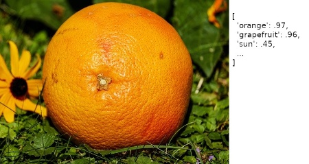center
Orange: 0.45Grapefruit: 0.53Lemon: 0.02
Here’s an example of a model returning confusing predictions for an image. The model is highly confident that the image contains either an orange or a grapefruit, with very similar confidence scores. What would you do in this situation? This highlights that sometimes ML models provide ambiguous results, and the system or human operator needs to handle such cases. For instance, in an automated fruit sorting system, this might lead to a re-scan or manual inspection.
Common Classification Models
Logistic Regression:
A variation of linear regression, uses a sigmoid function for binary outcomes. Simple and interpretable.
Nearest Neighbors:
Classifies based on the majority class among its closest data points. Intuitive, but sensitive to local data structure.
Decision Trees:
Tree-like structure where each node tests a feature, leading to a class decision. Good for interpretability.
Random Forests:
An ensemble of many decision trees, combining their predictions for robustness and better accuracy. Often very powerful.
Naive Bayes:
Based on Bayes’ theorem, assumes feature independence. Useful for text classification and spam detection.
**Deep Learning (Neural Networks):
Multi-layered networks capable of learning complex patterns. Highly effective for image, speech, and sensor data classification.
There are numerous models that can be used for classification, each with different underlying mathematical principles and strengths. Some of the more common ones we’ll encounter are listed here. In ECE, the choice of model often depends on the type of data, computational constraints (especially for embedded systems), and real-time requirements. For example, simpler models might be preferred for low-power edge devices, while deep learning excels in complex image or signal processing tasks.
The Machine Learning Classification Workflow
graph TD
A[Raw Sensor/System Data] --> B{Data Preprocessing}
B --> C[Feature Engineering/Extraction]
C --> D{Split Data <br> (Training & Testing Sets)}
D -- Training Data --> E[Choose & Train ML Model]
E -- & Evaluation --> F[Model Evaluation & Tuning]
D -- Testing Data --> F
F -- Performance OK? --> G[Deploy Model to ECE System]
F -- Needs Improvement --> E
G --> H[New Live Data Input]
H --> I[Real-time Prediction / Classification]
I --> J[Action/Decision <br> (e.g., Control Signal, Alert)]
style A fill:#f9f,stroke:#333,stroke-width:2px;
style G fill:#bbf,stroke:#333,stroke-width:2px;
style J fill:#fcf,stroke:#333,stroke-width:2px;
style E fill:#ccf,stroke:#333,stroke-width:2px;
style F fill:#dfd,stroke:#333,stroke-width:2px;
This flowchart illustrates a typical machine learning classification workflow. Notice the continuous loop for model training and evaluation, highlighting that model development is an iterative process. For ECE applications, “Raw Sensor/System Data” could be anything from acceleration data in a drone to voltage readings in a power grid. “Feature Engineering” could involve extracting frequency components, statistical moments, or energy levels from time-series signals. “Deploy Model to ECE System” represents integrating the trained model into hardware, software, or an embedded system, where it performs “Real-time Prediction” and drives “Actions,” such as adjusting a motor’s speed or triggering a safety shutdown.
The Confusion Matrix
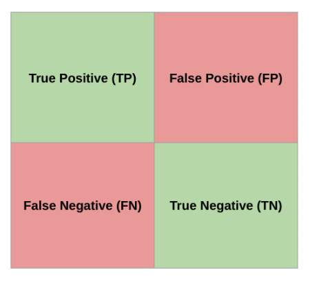center
True Positive (TP): Model predicted positive, was actually positive.False Positive (FP): Model predicted positive, was actually negative (Type I error).False Negative (FN): Model predicted negative, was actually positive (Type II error).True Negative (TN): Model predicted negative, was actually negative.
Most of the performance measures we’ll discuss are derived from the confusion matrix. For simplicity, we often analyze binary classification or evaluate a single class as “positive” against all others. For instance, in a system detecting defects (positive), a True Positive means the system correctly identified a defect. A False Positive means it flagged a non-defect as a defect (a false alarm). A False Negative means it missed a defect (a critical failure). A True Negative means it correctly identified a non-defect. The implications of FP vs. FN can vary greatly across ECE applications; e.g., in medical diagnosis, FN is often more critical than FP, while in spam detection, FP might be more annoying than FN.
Accuracy
The fraction of all predictions that a classification model got right.
Simply the sum of True Positives and True Negatives, divided by the total.
\[ \text{Accuracy} = \frac{\text{TP} + \text{TN}}{\text{TP} + \text{TN} + \text{FP} + \text{FN}} \]
center
Accuracy seems like a straightforward measure, but it can be misleading, especially with imbalanced datasets. Imagine a system trying to detect a rare fault in an industrial machine that occurs only 1% of the time. If our model simply predicts “no fault” all the time, it would achieve 99% accuracy, but it would completely fail to detect any actual faults. In ECE, relying solely on accuracy for rare event detection, like critical system failures or cybersecurity intrusions, can be very dangerous. This is why we need more nuanced metrics.
Motivation for Precision
When the model predicted positive, how often was it correct?
What is the probability that a detected anomaly in our sensor data is an actual* anomaly, given that our model flagged it?*
In many ECE scenarios, precision is crucial. For example, in a robotic arm that picks up defective items, high precision means fewer good items are accidentally discarded (fewer false positives). While accuracy might be high, if the FP rate is unacceptably high, it leads to waste or unnecessary actions. Precision directly answers the question: “Of all the times the model said ‘yes,’ how many times was it actually ‘yes’?”
Precision
The fraction of correct positive predictions out of all positive predictions made by the model.
\[ \text{Precision} = \frac{\text{TP}}{\text{TP} + \text{FP}} \]
center
Precision focuses on the accuracy of positive predictions. A high precision indicates a low rate of false positives. In ECE, high precision is desirable in applications where false alarms are costly or disruptive. Consider a system for chip manufacturing QA: discarding a good chip because it was misclassified as defective is costly. Here, precision helps minimize such errors. Precision of 1 means every time the model said “positive,” it was truly positive, but it doesn’t tell us if it missed any actual positives.
Motivation for Recall
Out of all the actual positive cases, how many did the model correctly identify?
What is the probability that our model will detect a ‘critical’ electromagnetic interference event, given that it actually occurred?
Recall addresses a different but equally important question: “Of all the actual ‘yes’ cases, how many did the model find?” In safety-critical ECE applications, missing an actual positive (a false negative) can be devastating. This is where recall shines.
Recall
The fraction of correct positive predictions out of all actual positive cases.
\[ \text{Recall} = \frac{\text{TP}}{\text{TP} + \text{FN}} \]
center
Recall, also known as sensitivity or true positive rate, is about how complete the model’s positive detections are. A high recall means a low rate of false negatives. In ECE, high recall is crucial for applications where missing a positive event is more detrimental than a false alarm. Examples include detecting equipment failures, security breaches, or health monitoring systems where failing to detect a critical condition is unacceptable. A recall of 1 means the model caught every single positive instance, but it doesn’t say anything about how many false positives it had along the way.
Precision vs. Recall: A Trade-Off
center
Increasing one often decreases the other.
The optimal balance depends on the application’s cost of FP vs. FN.
Balancing precision and recall is often a “tug-of-war.” If you want to increase recall (catch more positives), you might lower your decision threshold, potentially increasing false positives and thus lowering precision. Conversely, if you want to increase precision (be more certain of your positives), you’d raise the threshold, which might cause you to miss some actual positives, lowering recall. Finding the optimal point where these two metrics are acceptable for your specific ECE application is critical. For instance, in a fire detection system, high recall is paramount, even if it means some false alarms (lower precision).
F1 Score
The harmonic mean of precision and recall.
High F1 indicates both precision and recall are high.
\[ F_1 = 2 \cdot \frac{\text{Precision} \cdot \text{Recall}}{\text{Precision} + \text{Recall}} \]
center
The F1 score provides a single metric that balances both precision and recall. It’s particularly useful when you have an uneven class distribution, as it penalizes models that favor one metric over the other. The harmonic mean gives more weight to lower values, meaning a model needs both good precision and good recall to achieve a high F1 score. It’s a common metric when you need a general measure of a model’s effectiveness in ECE applications where both missing events and false alarms are important to manage.
F1 Score: Simplified
The F1 formula can be reduced to:
\[ F_1 = \frac{2 \cdot \text{TP}}{2 \cdot \text{TP} + \text{FP} + \text{FN}} \]
center
This simplified form of the F1 score can be directly calculated from the True Positives, False Positives, and False Negatives, making it convenient for quick computations.
Interactive Metric Calculator
Adjust the True Positives, False Positives, False Negatives, and True Negatives to see how Accuracy, Precision, Recall, and F1 Score change.
= Inputs. range ([0 , 100 ], {value : 1 , step : 1 , label : "True Positives (TP)" }); = Inputs. range ([0 , 100 ], {value : 1 , step : 1 , label : "False Positives (FP)" }); = Inputs. range ([0 , 100 ], {value : 8 , step : 1 , label : "False Negatives (FN)" }); = Inputs. range ([0 , 100 ], {value : 90 , step : 1 , label : "True Negatives (TN)" });
This interactive tool allows you to directly manipulate the components of a confusion matrix and observe their impact on the key classification metrics. By adjusting the sliders, you can simulate different model behaviors and gain an intuitive understanding of how True Positives, False Positives, False Negatives, and True Negatives affect Accuracy, Precision, Recall, and the F1 Score. This hands-on experience is crucial for ECE students to grasp the trade-offs involved in designing and evaluating ML systems.
Which Metric Do I Use?
The answer is always: it depends on your specific ECE application!
Accuracy: Rarely a sufficient standalone metric, especially with imbalanced classes.Precision: Crucial when False Positives are costly (e.g., discarding good products in QA, false alarms in security).Recall: Critical when False Negatives are costly (e.g., missing a fault in critical infrastructure, failing to detect a disease).F1 Score: A good general measure when you need to balance both precision and recall, particularly with imbalanced datasets.
Just remember, there’s no single “best” metric. In ECE, the choice depends heavily on the cost associated with different types of errors. In some contexts, a false positive might just be an annoyance, while in others (like a medical diagnosis or a safety system), it could lead to significant financial loss or danger. Conversely, a false negative in a critical fault detection system could lead to catastrophic equipment failure. Always consider the real-world consequences of your model’s mistakes when choosing which metrics to prioritize. Later, we’ll discuss more advanced measures and graphical tools that help provide a more complete picture.
Confusion Matrix Example
Scenario: A model predicts if a tumor is malignant. (Positive Class: Malignant, Negative Class: Benign)
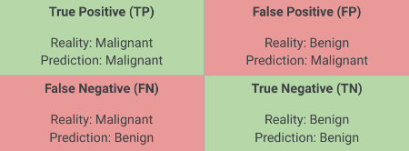center
Let’s practice calculating these metrics using a concrete example. Focus on a model designed to predict if a tumor is malignant. A “positive” outcome from the model means it predicts the tumor is malignant. We will walk through the components of the confusion matrix again with this scenario in mind. Remember: - True Positive: Model said malignant, and it was malignant. - True Negative: Model said benign, and it was benign. - False Positive: Model said malignant, but it was benign (Type I error - false alarm, patient undergoes unnecessary procedure). - False Negative: Model said benign, but it was malignant (Type II error - dangerous miss, patient doesn’t get treatment).
Confusion Matrix Example: Data
Model to predict if a tumor is malignant
center
Given these values: - TP = 1 - FP = 1 - FN = 8 - TN = 90
Total predictions = 100
Now, given these specific counts from our tumor prediction model, take a few minutes to calculate the Accuracy, Precision, Recall, and F1 score on your own. Think about what each value means in the context of tumor detection before we reveal the solutions on the next slides.
Solution: Accuracy
\[\text{Accuracy} = \frac{1 + 90}{1 + 1 + 8 + 90} = \frac{91}{100} = 0.91\]
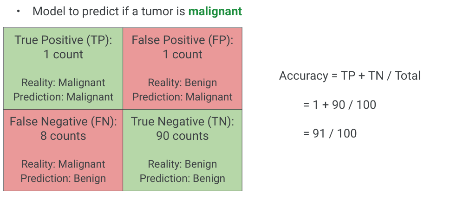center
As you can see, the accuracy is 91%. This looks quite good on its own. However, let’s see how the other metrics inform our understanding of this model. Remember our earlier discussion about accuracy with imbalanced datasets and the potential for false confidence.
Solution: Precision
\[\text{Precision} = \frac{1}{1 + 1} = \frac{1}{2} = 0.50\]
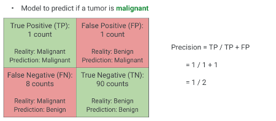center
The precision is 0.50, or 50%. This means that when the model predicts a tumor is malignant, it’s only correct half the time. While the overall accuracy was high, the model frequently gives false alarms for malignancy. This would lead to many patients undergoing potentially stressful and invasive follow-up tests unnecessarily.
Solution: Recall
\[\text{Recall} = \frac{1}{1 + 8} = \frac{1}{9} \approx 0.11\]
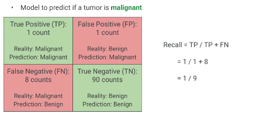center
The recall is approximately 0.11, or 11%. This is a very low recall score. It means the model only correctly identifies about 11% of the actual malignant tumors. In this medical context, missing 89% of malignant tumors (false negatives) is a severe problem. This highlights a critical failure of the model despite its seemingly high accuracy. Without surgical intervention, the consequences of a malignant tumor would be dire.
Solution: F1 Score
\[ F_1 = \frac{2 \cdot 0.50 \cdot 0.11}{0.50 + 0.11} = \frac{0.11}{0.61} \approx 0.18 \]
(Or, using the simplified formula: \[ F_1 = \frac{2 \cdot 1}{2 \cdot 1 + 1 + 8} = \frac{2}{11} \approx 0.18 \] )
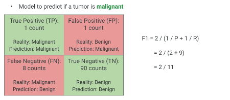center
The F1 score is very low, approximately 0.18. This low F1 score correctly reflects the poor performance of the model by penalizing the low recall, despite the relatively high precision (0.50) and high accuracy (0.91). This example vividly demonstrates why looking at all metrics, especially F1, is crucial and why relying solely on accuracy can be misleading in applications where class imbalance or the cost of different error types is significant.
Weather Prediction
Scenario: Predict “Rain” or “No Rain”.
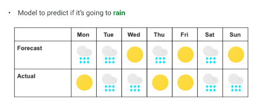center
Create a Confusion Matrix from this data.
Here’s another chance to practice. Given this weather prediction scenario for a week, where ‘R’ denotes Rain and ‘NR’ denotes No Rain, first, construct the confusion matrix based on the model’s predictions versus the actual weather.
Your Turn: Calculate Metrics
Now that you have constructed the confusion matrix for the weather prediction:
Accuracy = ?Precision = ?Recall = ?F1 Score = ?
Once you’ve built the confusion matrix, calculate the Accuracy, Precision, Recall, and F1 Score. Take a few moments to work through these.
Solution: Weather Prediction
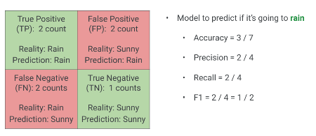center
Confusion Matrix: - TP (Actual Rain, Predicted Rain): 2 - FP (Actual No Rain, Predicted Rain): 1 - FN (Actual Rain, Predicted No Rain): 1 - TN (Actual No Rain, Predicted No Rain): 3
Metrics: - Accuracy: (2+3) / (2+1+1+3) = 5/7 = 0.714 - Precision: 2 / (2+1) = 2/3 = 0.667 - Recall: 2 / (2+1) = 2/3 = 0.667 - F1 Score: (2 * 0.667 * 0.667) / (0.667 + 0.667) = 0.667
Here are the solutions. This example shows a more balanced performance compared to the tumor prediction model, where all metrics are relatively consistent around two-thirds. This indicates a more even-handed performance from the classifier.
Graphical Measurements for Classification
Beyond single scalar metrics, graphical tools offer deeper insights into model performance across different decision thresholds.
Precision vs. Recall Curve
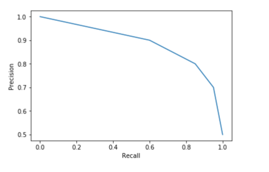center
Plots Precision against Recall for different threshold values.
Helps select an optimal operating point based on FP/FN costs.
The Precision-Recall curve visualizes the trade-off. Each point on the curve represents the precision and recall achievable at a specific classification threshold. For example, if your ECE system needs extremely high precision (e.g., avoiding false alarms for a critical alert), you might choose an operating point far to the right on the curve, even if it means lower recall. Conversely, if high recall is paramount (e.g., never missing a faulty component), you would choose a point further to the left, accepting more false positives. This curve is especially useful when one class is significantly rarer than the other, and helps you tune your ML model for the specific operational constraints of your ECE application.
Receiver Operating Characteristic (ROC) Curve
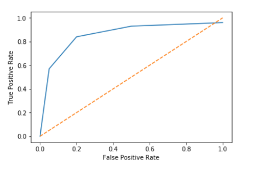center
Plots True Positive Rate (Recall) against False Positive Rate.
Helps compare models across all possible thresholds.
Another powerful graphical tool is the ROC curve. It plots the True Positive Rate, which is identical to Recall, against the False Positive Rate for various sensitivity thresholds. The False Positive Rate quantifies how many negative instances the model incorrectly classified as positive. A perfect classifier would reach the top-left corner (100% TPR, 0% FPR). The dotted line represents a random classifier.
ROC Curve: True Positive Rate (TPR) / Recall
\[ \text{TPR (Recall)} = \frac{\text{TP}}{\text{TP} + \text{FN}} \]
center
The Y-axis of the ROC curve is the True Positive Rate, which is simply our familiar Recall. It tells us, out of all actual positive cases, what fraction the model correctly identified.
ROC Curve: False Positive Rate (FPR)
\[ \text{FPR} = \frac{\text{FP}}{\text{FP} + \text{TN}} \]
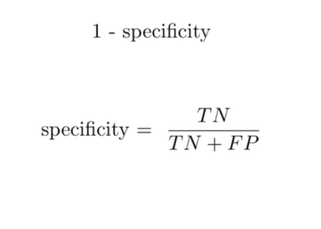center
FPR is 1 minus the True Negative Rate (Specificity).
Measures how many actual negative examples were falsely predicted as positive.
The X-axis of the ROC curve is the False Positive Rate. This is 1 minus Specificity, where Specificity is the True Negative Rate. FPR indicates the proportion of actual negative cases that were incorrectly classified as positive. So, if we have a system for detecting anomalies, a high FPR means we get a lot of false alarms from normal operations.
Interpreting the ROC Curve
center
TPR (Y-axis): Proportion of actual positives correctly identified.FPR (X-axis): Proportion of actual negatives incorrectly identified as positive.Dotted Line: Represents a random classifier (AUC = 0.5).Area Under Curve (AUC): Single scalar metric to summarize the curve.
AUC near 1.0 indicates excellent discriminative power.
AUC near 0.5 suggests poor or random classification.
An ideal ROC curve hugs the top-left corner, signifying high TPR and low FPR across various thresholds. The Area Under the Curve (AUC) provides a single value summary of the model’s performance across all possible classification thresholds. An AUC of 1.0 is a perfect classifier, while 0.5 is no better than random guessing. AUC is a robust metric for comparing different models, especially when the class distribution is balanced or when the cost of FP and FN is similar. In ECE, AUC is commonly used for evaluating diagnostic systems, anomaly detection, and classification problems where overall discriminative ability is key, regardless of a specific operating point initially.
Binary Classification
Now that we’ve covered the basics of classification and its evaluation, let’s dive into the simplest form: binary classification . This is fundamental and forms the building block for more complex multi-class problems.
Binary Classification: Two Outcomes
center
Predicts one of two discrete values or states.
Commonly encoded as 0 or 1.
Examples:
Spam / Not Spam
Fault / No Fault
Signal Present / Signal Absent
Pass / Fail for product testing
Binary classification problems involve predicting one of only two possible outcomes. These outcomes are often represented as a positive class (e.g., 1) and a negative class (e.g., 0). In ECE, binary classification is ubiquitous. Think of a sensor determining if a component’s temperature is “over threshold” or “normal,” a communications system detecting if a packet contains “error” or “no error,” or an embedded system classifying a touch input as “press” or “release.”
Binary Classification: Common Models
Logistic Regression: Transforms linear regression output into a probability (0-1).Decision Trees & Random Forests: Can naturally split data into two categories.Support Vector Machines (SVM): Finds an optimal hyperplane to separate classes with the largest margin.Bayesian Networks: Probabilistic graphical models used for classification.Neural Networks: Highly versatile, learn complex non-linear boundaries.
Many different machine learning models can be adapted for binary classification. Each has its own strengths and weaknesses regarding computational complexity, interpretability, and ability to handle different data distributions. We will explore several of these throughout the course. For an ECE context, the choice often depends on the available computational resources on a chip or embedded system, the latency requirements, and the complexity of the decision boundary needed.
Binary Classification: Logistic Regression Example
center
Finds a logistic function to separate two classes.
Outputs a probability value (0-1) which is then thresholded for classification.
Relatively easy to interpret.
In the upcoming lab, we will build a logistic regression model. This algorithm is particularly useful for binary classification. It applies a sigmoid function to the output of a linear model, squeezing the result into a range between 0 and 1, which can be interpreted as a probability. You can then set a threshold (e.g., 0.5) to classify points. While straightforward, it performs best when the data is linearly separable or can be made so with feature engineering. This is a good starting point for many ECE tasks due to its computational efficiency.
Lab Preview: Fruit Classification
center
Objective: Differentiate between oranges and grapefruit.Dataset: Contains features like weight, size, and color.Model: We will build a logistic regression model.
In our hands-on lab, you’ll tackle a binary classification problem: distinguishing between oranges and grapefruits. We’ll utilize a dataset rich with physical characteristics like weight, size, and color. This is a practical example of how classification can be used in areas like automated sorting systems in agriculture or quality control in food processing, which are relevant to ECE.
Lab Preview: Hyperparameter Tuning with Grid Search
= GridSearchCV(model, {'learning_rate' : [1e-3 , 1e-4 ],'max_iter' : [10000 , 15000 ],'C' : 1 ,
Grid Search: Systematically explores a combination of hyperparameters.Helps find the best parameter settings for your model.
Can be computationally intensive, especially with many parameters.
In the lab, you’ll also encounter GridSearchCV, a powerful technique for hyperparameter tuning. Instead of manually trying different learning_rate or max_iter values, Grid Search automates this process. It tries every possible combination of the provided hyperparameter values, trains a model for each combination, and evaluates its performance to find the optimal set. While incredibly useful for robust model development, remember that the number of combinations grows factorially, which can make it time-consuming, especially for complex ECE models running on limited embedded hardware.
Lab Preview: Confusion Matrix Generation
center
You will generate your first confusion matrix.
Visualizing TP, FP, FN, TN for your fruit classifier.
Finally, the lab will guide you through creating your first confusion matrix, just like we discussed earlier. This will allow you to see the real-world performance of your logistic regression model on the fruit classification task and apply the metrics we’ve learned today.
Your Turn: Binary Classification Lab
Let’s apply these concepts and build a binary classifier!
Now it’s time to put what you’ve learned into practice! Head over to the lab environment to begin working on the binary classification exercise.
Multiclass Classification
Moving beyond two categories, we now explore scenarios where models must distinguish between more than two distinct classes—a common occurrence in many advanced ECE applications.
Multiclass Classification: Many Outcomes
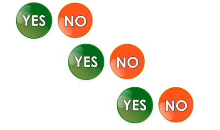center
Classification problems with more than two classes.
Examples:
Digit recognition (0-9)
Speech command recognition (e.g., “activate,” “mute,” “volume up”)
Modulation scheme identification (e.g., BPSK, QPSK, 16-QAM)
Component type classification
“Multiclass classification” refers to problems where a data point needs to be assigned to one of several possible categories. This is distinct from binary classification, which handles only two categories. In ECE, multi-class problems are prevalent: classifying different types of electrical faults, recognizing multiple speech commands for a microcontroller, identifying different types of cybersecurity attacks, or classifying different materials using sensor data.
Multiclass Strategies: One-vs-All (OvA) & One-vs-One (OvO)
One-vs-All (OvA):
Trains k binary classifiers for k classes.
Each classifier distinguishes one class from all others .
Final prediction is the class with the highest confidence.
One-vs-One (OvO):
Trains k * (k-1) / 2 binary classifiers.
Each classifier distinguishes one class from another specific class .
Final prediction is derived by a voting scheme among classifiers.
Many binary classification algorithms can be extended to handle multi-class problems using strategies like One-vs-All (OvA) or One-vs-One (OvO). OvA is simpler: for each class, you train a binary classifier to decide if an instance belongs to that specific class or any other class . OvO is more complex, training a binary classifier for every unique pair of classes, and then aggregating their votes. While often hidden from the user in modern ML libraries, understanding these strategies helps in debugging and selecting appropriate models, especially in resource-constrained ECE systems where computational efficiency matters. Some models, like Decision Trees, naturally handle multiple classes without needing these decomposition strategies.
Lab Preview: The Iris Dataset
center
Classic ML Dataset: Widely used for multiclass classification.Features: Sepal length, sepal width, petal length, petal width.Target: Three species of Iris flowers (Setosa, Versicolor, Virginica).
For our multiclass classification lab, we’ll use the famous Iris dataset. This dataset is a cornerstone in machine learning and provides a perfect example for practicing multi-class problems. The features are physical measurements of different parts of the flower, and the goal is to classify the species. This type of problem is analogous to classifying different types of electronic components based on their physical or electrical characteristics, which could be relevant in automated manufacturing and quality control in ECE.
Lab Preview: Wine Producer Identification
center
Challenge: Identify wine producers based on chemical properties.Dataset: Chemical analysis of different wines.Your Task: Apply your ML skills with minimal guidance.
For your final exercise in the lab, you’ll tackle another multiclass problem: identifying the producer of a wine based on its chemical composition. This exercise will provide less guidance, challenging you to independently apply the machine learning skills you’ve acquired. This scenario mirrors many real-world ECE problems where sensor data (e.g., from spectroscopy or chemical analysis) is used for classification tasks like material identification, quality control, or authentication.
Your Turn: Multiclass Classification Lab
Time to apply your knowledge to solve multiclass problems!
You’ve now covered the theoretical foundations of multiclass classification and learned about powerful evaluation techniques like cross-fold validation. The lab awaits, where you’ll get hands-on experience with these concepts, culminating in a challenge to really test your machine learning prowess. Good luck!